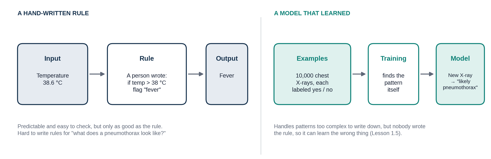
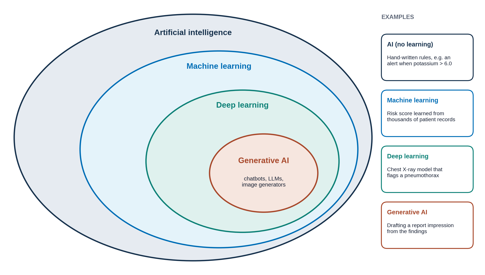

Overview
You do not need any background in computers for this module. In five short lessons you will learn what AI is, how it learns, what it learns from, how to tell whether it is any good, and how it fails. This first lesson sets up the vocabulary. It takes about 15 minutes.
By the end of this lesson you can:
- Define AI in one sentence.
- Tell a hand-written rule apart from a model that learned from examples.
- Place AI, machine learning, deep learning and generative AI in one picture.
- Name three AI tools already used in medicine.
Throughout Module 1 we follow one made-up tool, PTX-Detect. It looks at a chest X-ray and flags a possible pneumothorax (collapsed lung) so a radiologist reads that film first. Each lesson asks one question about it: what is it, how was it trained, what did it learn from, how good is it, and when does it break?
You already use AI
Before medicine, think about your phone. Several things you use every day are AI:
- Face unlock recognizes your face in different lighting, with or without glasses.
- Spam filters decide which emails are junk.
- Autocorrect and predictive text guess the next word you want.
- Maps predict how long the drive will take from current traffic.
- Chatbots such as ChatGPT write answers to your questions.
A simple working definition: artificial intelligence (AI) is a computer system that does a task we would normally say needs human intelligence, such as recognizing a face, understanding language or spotting a pattern in an image.
For a friendly 12-minute overview, watch this before going on:

Rules vs learning
There are two broad ways to get a computer to do a task.
Write the rule yourself. A person decides the logic: "if temperature is above 38 °C, flag fever." The computer follows it exactly. This is predictable and easy to check, and it is how many hospital alerts work.
Let it learn from examples. Some tasks are too hard to write down. Try writing a rule for "what does a pneumothorax look like on a chest X-ray?" It depends on the patient's position, the film quality, the size of the collapse and much more. Instead, you show the computer thousands of X-rays, each labeled "pneumothorax" or "no pneumothorax", and let it find the pattern itself. The result is called a model, and this approach is called machine learning.

PTX-Detect is a learned model, not a rule. Nobody wrote "look for a thin white line with no lung markings beyond it." Its makers gave it many labeled chest X-rays and it worked out its own pattern. That is its strength, and also why it can learn the wrong thing, as you will see in Lesson 1.5.
The family tree: AI, machine learning, deep learning, generative AI
These four terms are often used as if they mean the same thing. They don't. Each one sits inside the one before it.

Before you turn each card over, try to say in your own words what the term means. Then flip it and compare.
So every deep learning model is machine learning, and every machine learning model is AI. The reverse is not true: a simple rule-based alert is AI but not machine learning.
Optional, if you are curious how chatbots work: Large Language Models explained briefly (3Blue1Brown, 8 min).
Try it: AI or not?
For each tool, decide how it works. Pick one answer per card to see the explanation. There are no points; this is just practice.
Want to see a learned model in action? Play Quick, Draw! for two minutes. You doodle, and a neural network guesses what you drew. It learned from millions of other people's doodles.
AI in medicine today
AI is already part of daily clinical work. A few examples you may meet on rotations:
- Triage alerts: a model flags a CT that may show a brain bleed or a large stroke, so it moves to the top of the radiologist's list.
- Mammography second reads: a model marks suspicious areas on a screening mammogram for the radiologist to check.
- Ambient scribes: a generative AI listens to a clinic visit and drafts the note.
- Report drafting: generative AI suggests the impression of a radiology report from the findings.
Module 2 shows where these tools fit into the radiology workflow, and Module 3 covers how to judge them and use them safely.
Screenshot of a triage alert, e.g. a worklist with an AI flag on a head CT for possible hemorrhage. De-identified or vendor image with permission.
Screening mammogram with an AI mark (box or score) on a suspicious area. De-identified or openly licensed.
Deep learning detecting diabetic retinopathy in retinal photos: Gulshan et al., JAMA 2016. Classifying skin lesions from photos: Esteva et al., Nature 2017.
What AI is not
Three common misunderstandings:
- It is not thinking. A model finds statistical patterns in data. It has no understanding of anatomy, patients or disease.
- It is not general. PTX-Detect finds pneumothoraces. It cannot spot a rib fracture unless it was trained to, and it will not tell you that it can't.
- It is not always right. Every model makes mistakes, and it can be confident while wrong. Lessons 1.4 and 1.5 show how to measure and expect those mistakes.
Knowledge check
Answer each question to continue. Any answer is fine; read the explanation.
Which of these learned its behavior from examples?
The X-ray tool was trained on labeled examples, so it is machine learning. The other three follow rules or tables that people wrote.
Is every AI tool a deep learning model?
Deep learning sits inside machine learning, which sits inside AI (Figure 2). Rule-based systems and simpler machine learning models are AI without being deep learning.
What does "generative" mean in generative AI?
Generative AI produces new content: a chatbot writes text, an image model draws pictures. It is still trained for particular kinds of output and is not "general" intelligence.
Key takeaways
- AI is a computer system doing a task that normally needs human intelligence.
- A rule is written by a person; a machine learning model learns its own pattern from labeled examples.
- AI ⊃ machine learning ⊃ deep learning ⊃ generative AI.
- AI is already used in triage, screening, documentation and reporting. It does not think, it is narrow, and it makes mistakes.
Go further (optional)
- What are Different Types of AI Models (YouTube)
- Major AI Disciplines Explained (YouTube)
- Artificial Intelligence Explained (CMU Heinz College, short article)
Next lesson: how does a model like PTX-Detect actually learn?